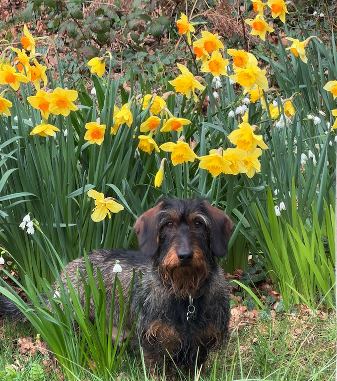

Type the four numbers Sam gave you.

Sam and Steph x
Tap one to read it. Every walk says where to park if you'd rather drive to the start.
Fank you for looking after me Nanny. Dis is my routine.
Two things have a fixed time: the cleaners on Wednesday morning, and Woody's dog bus at 10:40 on Thursday. Everything else is whenever suits.